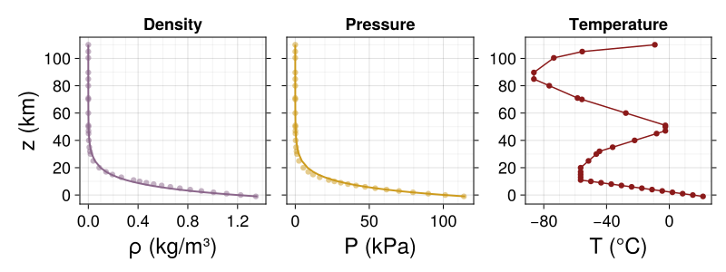

The Earth (climate) system
Week
GEOS 3410
Week Schedule
Tuesday
- Systems
- The Earth system (science)
- Cycles
Thursday
- Cycles, cont.
- Feedbacks
- In-class exercise
Outisde of class
System Science
A system (in the sense of the Earth system) is a suite of interconnected reservoirs that exchange "stuff" via connections

Systems are made up of reservoirs with fluxes between them...

The reservior and fluxes are any quantity — energy, matter, etc...
Residence Time
How long does a "particle" typically remain in the reservoir?
$$\tau = \frac{m}{f}$$
This is the mean residence time for a system with constant inflow/outflow, where τ is residence time, m denotes the quantity, and f denotes the flux.
What happens when we increase the flux in (or decrease the flux out)?

↑ The reservoir fills ↑
What happens when we decrease the flux in (or increase the flux out)?

↓ The reservoir empties ↓
...until the reservoir reaches equilibrium with the altered fluxes.
Equilibrium does not mean static
Equilibrium vs. non-equilibrium

State transitions
Thresholds and tipping points
System responses in time
State transitions in time

üåç Subsystems of the Earth System üåç
- Lithosphere (geosphere)
- Hydrosphere
- Cryosphere
- Biosphere
- Atmosphere

üåã Lithosphere / Geosphere üåã
üåã Lithosphere / Geosphere üåã

Plate tectonics are fundamental to Earth system processes

Footnote: Core → magnetosphere


Protects atmosphere from solar wind!
üíß Hydrosphere üíß
üíß Hydrosphere üíß

Oceans and climate
- Strongly coupled with atmosphere sub-system
- Water has high heat capacity
- Ocean currents (both deep and shallow) transfer heat globally

üßä Cryosphere üßä
(cryosphere ⊂ hydrosphere)All the ice...

ALL the ice...


ALL THE ICE...
Snow cover January 2024

Ice & climate... lots more to come in later weeks!
ü¶† Biosphere ü¶†
Redox chemistry
Reduction: gain an electron (e– → reduces charge)
Oxidation: lose an electron

Oxidation: lose an electron
Organic & Inorganic carbon
Organic
Carbon atoms bonded directly to C and H atoms, i.e. hydrocarbons.
(sugars, fats, petroleum)

Inorganic
Carbon atoms not bonded to C or H, often bonded to oxygen.

Autotrophs
Primary producers
Produce their own food by converting abiotic energy into organic compounds.
Heterotrophs
Get nutrition from organic carbon of other organisms.

Biology fundamentals (for Earth scientists)
Life is made up of...
- oxygen (~63%)
- carbon (~18%)
- hydrogen (~10%)
- nitrogen (~2%)
- calcium (~2%)
- everything else (~5%)
Life is limited by two things: nutrients, energy
- life gets energy from organic C (reduced) by oxidizing it (into CO2)
- autotrophs make org-C by harnessing chemical gradients (photosynthesis, chemosynthesis)
Major life-mediated carbon transformations
Chemo-/Photosynthesis
CO2 + H2O + energy→ CH2O + O2

formaldehyde
Respiration
C6H12O6 + 6 O2→ 6 CO2 + 6 H2O + energy

Primary Production

- Where is production greatest? Least?
- What controls primary production?
üå™ Atmosphere üå™
Hydrostatic equilibrium
Outward force of atmospheric pressure balances the inward force of gravity.Any stable atmosphere is in hydrostatic equilibrium.
Physical structure of atmosphere

\[\begin{aligned}
\rho(z) &= \rho_o e^{-z/H} & P(z) &= P_o e^{-z/H}
\end{aligned}\]
$H$ is the "scale height"
Atmospheric layers
| Troposphere | convective, heated at Earth's surface — clouds, wind, weather. |
|---|---|
| Stratosphere | stratified, 90% of ozone |
| Mesosphere | diminishing ozone → cooling |
| Thermosphere | absorbs very short UV wavelengths, ionized atoms (overlaps ionosphere) |
Ozone
O2 + O+ ↔ O3
Atmospheric chemistry


Earth System Science
Foundations

The Amsterdam Declaration (2001)
- The Earth System behaves as a single, self-regulating system
- Global change is real and happening now
- Global change operates through complex, cascading effects characterized by critical thresholds and abrupt changes
- The Earth system is currently in a no analogue state
An updated Earth system model

Planetary boundaries framework

The Anthropocene epoch…
… was rejected by International Commission on Stratigraphy (ICS) and the Subcommission on Quaternary Stratigraphy (SCS). Not a strict enough definition, perhaps an event rather than an epoch.
A humanist criticism of the Anthropocene
The dominant presentation of the Anthropocene ignores the role of systems, such as colonialism, capitalism and patriarchy and erases the racialised history of extractive colonialism that has given rise to this form of globalism.
Two critical research challenges facing Earth system science
- How stable and resilient is the Earth system?
- How can we better understand the dynamics of human societies?
Two very important molecules

water — H2O

carbon dioxide — CO2
Where's Water?

Aqueous (water) chemistry
water = proton + hydroxide
$$ \text{H}_2\text{O} ~\longleftrightarrow ~ \text{H}^+ + \text{OH}^- $$| Excess of H+ | acidic | pH < 7 |
| Excess of OH− | basic | pH > 7 |
Aqueous carbonate system
\[\begin{aligned}
\text{H}_2\text{O}_{(l)} + \text{CO}~_{2~(g)}~&\longleftrightarrow~ \text{H}_2\text{O}_{(l)} + \text{CO}~_{2~(aq)}
\\\\
\text{H}_2\text{O} + \text{CO}~_{2~(aq)} ~&\longleftrightarrow~ \text{H}_2\text{CO}_3
\end{aligned}\]
Aqueous carbonate system
\[\begin{aligned} \text{H}_2\text{O} + \text{CO}~_{2~(aq)} ~&\longleftrightarrow~ \text{H}_2\text{CO}_3 \\\\ \text{H}_2\text{CO}_3 ~&\longleftrightarrow~ \text{H}^{+} + \text{H}\text{CO}_3^- \\\\ \text{H}^{+} + \text{H}\text{CO}_3^- ~&\longleftrightarrow~ 2~\text{H}^{+} + \text{CO}_3^{2-} \\\\ (\text{H}_2\text{O} ~ &\longleftrightarrow ~ \text{H}^+ + \text{OH}^-) \end{aligned}\]$$\text{Ca}^{2+} + \text{CO}_3^{2-} \longrightarrow \text{CaCO}_3$$
Aqueous carbonate system

Aqueous carbonate system
- ↑ pH (↓ H+)… eqn. moves →
- ↓ pH (↑ H+)… eqn. moves ←
- ↑CO2 → ↑ H+ → ↓ pH
Biogeochemical Cycles
Water Cycle


Carbon Cycle

Marine carbon: the biological pump
Recycling of POC and DOC through autotrophs (phytoplankton) and heterotrophs in seawater column.
| P | Particulate |
|---|---|
| D | Dissolved |
| OC | Organic Carbon |
| IC | Inorganic Carbon |
Carbon cycle on human timescales

Inorganic carbon (carbonate-silicate) cycle

The terrestrial carbon system
C transfer between surface and interior (lots of C!) on geologic timescales.Nitrogen cycle
Chemistry
Transition to oxidized states by nitrification and to reduced states by denitrification.

(Anammox = Anaerobic ammonia oxidation)
Nitrogen cycle
Marine

Terrestrial

Sulfur cycle

Sulfur Cycle
And short-term climate responses

Sulfur cycle

Sulfur in the stratosphere
Stratospheric eruptions inject sulfur into atmosphere: $$\text{SO}_2 ~\longrightarrow~ \text{H}_2\text{SO}_4$$ Sulfuric acid aerosols increase reflection of light above troposphere and cool the planet (for a few years)Feedbacks
System Interactions
Causal diagrams
| Positive forcing | $$ x \xrightarrow{+} y$$ | As x ↑, y ↑ (As x ↓, y ↓) |
|---|---|---|
| Negative forcing | $$ x \xrightarrow{-} y$$ | As x ↑, y ↓ (As x ↓, y ↑) |
Albedo (α)
The fraction of incident radiation (light) that an object reflects.
| α = 1 | Reflects all incident light |
|---|---|
| α =0 | Absorbs all incident light |

{kind=link}
{kind=link}
{kind=link}
{kind=link}
{kind=link}
{kind=link}
Ice-albedo feedback

Permafrost-warming feedback

Silicate Weathering Feedback
Lab this afternoon in MMS 273
Next Week ()
- Complete/grade quantitative skills packet & meet with me, by Sept 12
- Lab 1 due Friday (tomorrow) by 11:59pm
- Astrophysics of climate